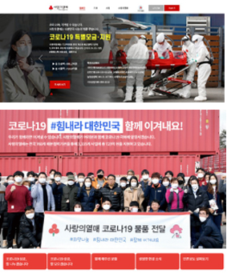

CCK Five Principles in Support against COVID-19
The money raised was provided quickly in consultation with private welfare organizations, mainly for four areas: disinfection and sanitation control; livelihood support; care; and preventive measures.
COVID-19 Special Allocation Projects in Four Areas
We provide support in four major areas based on meetings with major social welfare organizations and associations.
| Area | Description |
|---|---|
| 1) Disinfection and sanitation control | Health supplies and personal hygiene items, disinfection of spaces that people use or live in |
| 2) Livelihood support | Living expenses for families in crisis, daily necessities, groceries, and ready-to-cook meals |
| 3) Support in welfare service gaps | Substitute care personnel, activities to replace reduced social relations and activities, psychological and emotional support, support to find space (temporary dwelling), etc. |
| 4) Support for medical staff, patients, quarantined people, and volunteers | Supplies (protective gear, underwear, meals/snacks, daily supplies for those hospitalized or quarantined suddenly) |
Five Principles for COVID-19 Special Allocation
Principle 1. Fund distribution in collaboration with social welfare organizations
Principle 2. Prompt support without duplication or omission
- Integrated fund distribution process, simplified application, real-time online screening
We reduced the lead time of nine months to 25 days to permit emergency support, minimizing the process by integrating standard allocation procedures, simplifying application forms, and conducting evaluations online in real time.
Principle 3. Wider scope for and targets of allocation for more effective application
We improved project effectiveness by providing focused yet flexible support. While we focused on our usual social welfare service areas, we expanded the scope of eligibility and increased the maximum support provided for individuals. As a result, support was given to regions, residents, workers in the industries affected by COVID-19, prevention efforts, and early restoration projects.

1. Volunteers making cotton masks for senior citizens in South Chungcheong Province
2. Jeju Soju Co., Ltd. donating rubbing alcohol for disinfection
3. Food kits for senior citizens in Daegu and North Gyeongsang Province
4. Volunteers disinfecting neighborhoods in Wonju to prevent infection
5. Support kit for subway cleaning staff in Seoul
6. Thermovision camera installed in a homeless center
7. Delivering protective gear for medical staff and volunteers in Busan
8. Making free lunches for senior citizens in South Gyeongsang Province
2. Jeju Soju Co., Ltd. donating rubbing alcohol for disinfection
3. Food kits for senior citizens in Daegu and North Gyeongsang Province
4. Volunteers disinfecting neighborhoods in Wonju to prevent infection
5. Support kit for subway cleaning staff in Seoul
6. Thermovision camera installed in a homeless center
7. Delivering protective gear for medical staff and volunteers in Busan
8. Making free lunches for senior citizens in South Gyeongsang Province
Principle 4. Distribution based on public-private governance, collaboration between private support foundations
We hold Donation Council meetings with relevant ministries and major fundraising organizations, such as Hope Bridge Korea Disaster Relief Association and the Korean Red Cross, on a regular basis to share how the support programs are being run by each of the local governments and fundraising organizations. In addition, we hold meetings with welfare-related organizations to ensure more rapid and effective fund allocation, and participate in the COVID-19 Task Force of social welfare organizations. Constant communication and cooperation with a variety of organizations allow us to avoid duplication or omission in our activities, including fundraising and fund distribution, and create synergy.
Joint Task Force of Social Welfare
Community for COVID-19
Community for COVID-19
Donation Council of major fundraising
organizations and relevant ministries
organizations and relevant ministries
Principle 5. Ransparent information disclosure
We have transparently disclosed our activities on the CCK website and social media accounts to inform the public of the details of the funds raised and distributed. This has resulted in higher public participation.
Allocation details of COVID-19 special
funds and project reviews are
shared on our Facebook page.
funds and project reviews are
shared on our Facebook page.

COVID-19 #GoKorea Let’s Do This Together!
Details of fundraising and distribution
are reported on our website.
Details of fundraising and distribution
are reported on our website.